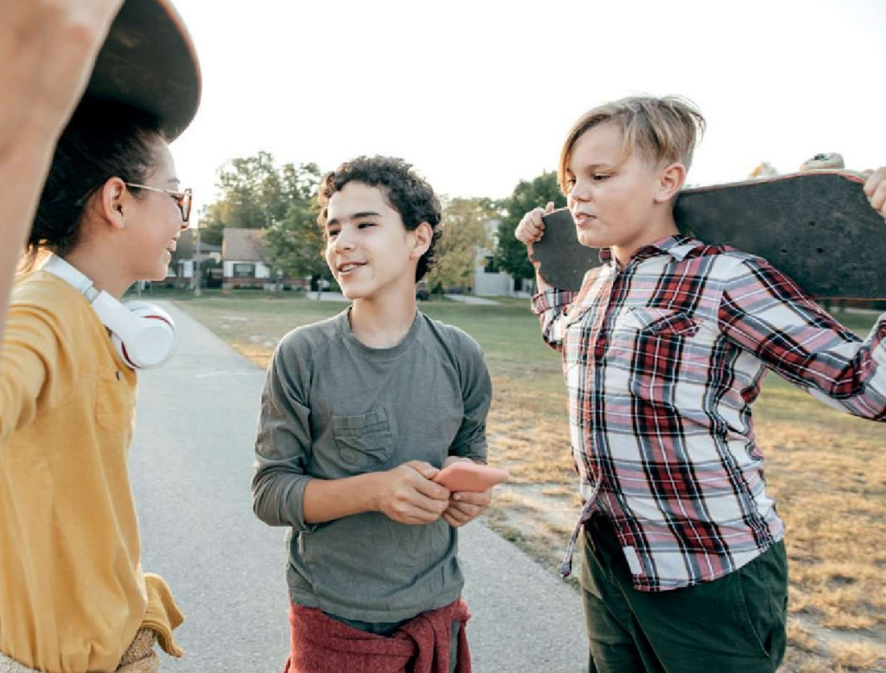

A new girl at school: listen to a dialogue, learn phrases for fluency — How’s it going? That’s awesome! I know! See you later. — and talk about other people: Who’s she? Where’s she from?
| Warm-up | 10–12 min | Vocabulary Worksheet Unit 1, Tasks 5–7 (phrases, words in order, choose the words) |
| Dialogue | 20 min | Ex. 1 photo → Ex. 2 (1.09) → Ex. 3 T/F → Phrases for fluency Ex. 4–6 |
| Speaking | 20 min | Key Language → Ex. 7 → Ex. 8 → Ex. 9 act out + own dialogues → Итог |
| Extras | if time | All hidden from him. Open them here with the violet Open for the student bar:
• Warm-up tab: First letters (TB Warmer T18); the worksheet’s Basic (easier) and Extension (harder) versions of Tasks 5–7 • Dialogue tab: Workbook p. 16 Ex. 4–6 (Dialogue + Phrases for fluency) • Speaking tab: Record your dialogue (TB Activity idea · Extension) |
Aims (Teacher’s Book T18): Developing Speaking — a dialogue about a new girl; Phrases for fluency — How’s it going? · See you later. · That’s awesome! · I know!; Functions — talking about yourself and others: Who’s that/he/she? — That’s/He’s/She’s …
1. b …
2. s …
3. n …
4. o …
5. f …
6. s …
7. c …
8. e …
9. c …
10. d …
Hello Tina.
BHow’s it going?
AThis is my new computer.
BWow, that’s !
AIs this your camera?
BYes, it .
AI’m off now.
B.
AMadrid is the capital of Spain.
BI !
ASee you later.
BOK. See you .
Первое слово предложения — с большой буквы, даже если на плитке маленькая (it → It): здесь это не важно.
I am . I’m from New York City in the , but my parents are from other countries. My mum is . She’s from Malaga. My dad is from Istanbul. It is the capital of . New York is : 8.5 million people live in this city. Our house is in Brooklyn. It is 100 years old. It is an house.
Гласные: a, e, i, o, u. Напиши слово целиком.
0. A Madrid is the capital of Spain. B I know!
1. A Hello Tina. B How’s it ?
2. A This is my new . B Wow, that’s awesome!
3. A Is this your ? B Yes, it is.
4. A I’m off now. B .
5. A See you later. B OK. See you .
I am . I’m from New York City in the , but my parents are from other countries. My mum is . She’s from Malaga. My dad is from Moscow. It is the capital of . New York is a city. Our house is in Brooklyn. It is 100 years old. It is an house.
I am American. I am from New York City in the , but my parents are from other countries. My mum is . She’s from Malaga, and my father is from Istanbul – a city in . New York is a city: 8.5 million people live in this city. We live in an house in Brooklyn – it’s 100 years old.
Первые буквы: U… · S… · T… · b… · o…

I can see people.
Hi, Tom.
TomHi, Mark. How’s it going?
MarkGreat, thanks. Nice skateboard!
TomOh, right. Thanks!
MarkWho’s that?
TomThat’s Daniela.
MarkWho’s she?
TomShe’s new. She’s in another class.
MarkWhere’s she from?
TomI’m not sure. But I think she’s Spanish. From Madrid, I think.
MarkSpanish? Wow! That’s awesome.
TomI know!
DanielaHi, you two. I’m Daniela. I’m new here. I’m from Manchester.
MarkManchester? But Tom …
TomOK, time to go. See you later, Mark. Bye, Daniela.
DanielaBye. Is there a problem?
Daniela is from .
1. Mark likes Tom’s skateboard.
2. Daniela is in Tom’s class.
3. Tom thinks Daniela is from Madrid.
4. Daniela is not Spanish.
1. How’s it going?
2. See you later.
3. That’s awesome!
4. I know!
1. A This is my new bicycle. B Great! →
2. A This is a nice computer. B Yes, it is. →
3. A Hi, George. How are you? →
4. A OK, I’m off now. Goodbye! →
0. A Moscow is a city in Russia. B I know!
1. A Hello, Ben! B ?
2. A Look at my new phone. B !
3. A Goodbye, Mike. B , Annie.
Hi, what’s your name?
Girl0 I’m Alex.
BoyAnd where are you from?
Girl1
BoyWhat city are you from?
Girl2
BoyToronto’s a beautiful city.
Girl3
BoyWho’s your favourite singer?
Girl4
BoyWhy is he your favourite singer?
Girl5
BoyNice to meet you, Alex.
Girl6
1. A Hi, David. B I’m fine, thanks.
2. A Bye, Tomas. B Bye, Lina.
3. A This is my new tablet. B
4. A Raheem’s a great football player. B
| Questions | Answers |
|---|---|
| Who’s that? | That’s Maria. |
| Who’s he? | He’s Ben. |
| Who’s she? | She’s Maria. |
Перетащи слова (или нажми на слово, а потом на место). Большая буква в начале здесь не важна.
Dialogue 1
Dialogue 2
Dialogue 3
Нажми кнопку записи, скажи диалог (ты и учитель), потом послушай. Запиши ещё раз — стало лучше?
Отметь всё, что уже получается!